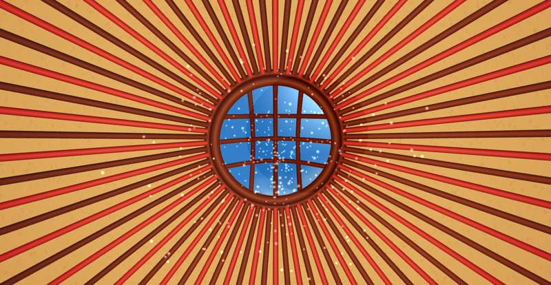
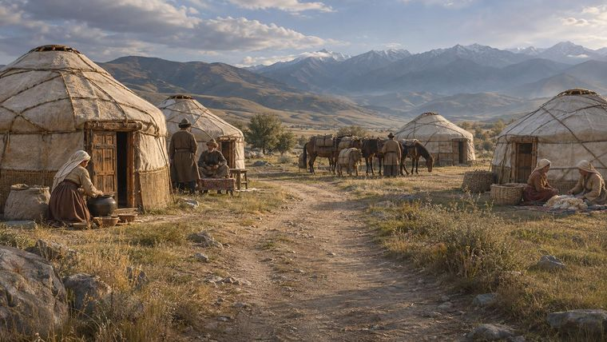
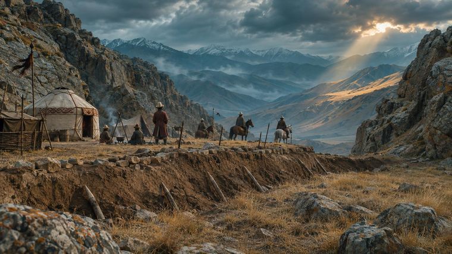

Қазақ даласының тарихы мен мәдениеті
Сақтардан тәуелсіз Қазақстанға дейінгі жол, киіз үйден күйге дейінгі мұра. Оқып, 3D-де айналдырып көр, гидтен кез келген тілде сұра.
Шаңырақ — киіз үйдің төбесі. Сен қазір үйдің ішінен аспанға қарап тұрсың.
Тарих
Алты дәуір, 26 оқиға. Дәуірді таңда, уақыт сызығын жылжыт немесе картадан орынды тап.
Мәдениет
Киіз үй, домбыра, ою-өрнек, дастарқан, ойын мен жыр — далада ғасырлар бойы қалыптасқан өмір салты.
3D мұражай
Экспонатты таңда, тінтуірмен айналдыр, жақындат. Анимация экспонаттың қалай жасалатынын немесе қолданылатынын көрсетеді.
3D саяхат
Тарихи оқиғаның ішіне кір: XV ғасырдағы қоныс, 1643 жылғы шатқал, 1723 жылғы көш.

Керей мен Жәнібектің жұрты Шу бойына қоныстанды. Ауылды аралап, тұрғындармен сөйлес, киіз үйдің бұйымдарын зертте.
Саяхатты бастау
Жәңгір ханның жасағы тар өткелді қорғады. Шатқалды барла, хабар жеткіз, қорғаныс шебін ұста.
Саяхатты бастауАқтабан шұбырынды жылдары ел көшке шықты. Су мен ықтасын тауып, көшті қауіпсіз аялдамаға баста.
Саяхатты бастауТұлғалар мен ұғымдар
Тарихта із қалдырған адамдар және тарихи терминдердің мағынасы.
Ойындар
Ұлттық ойындар мен тарихи сынақтар: тоғызқұмалақ, 3D асық ату, сөзжұмбақ, күй жады және басқалар.
ЖИ гид
Қазақстан тарихы мен мәдениеті туралы кез келген тілде сұра. Гид сайттағы деректерге сүйеніп жауап береді.